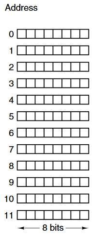
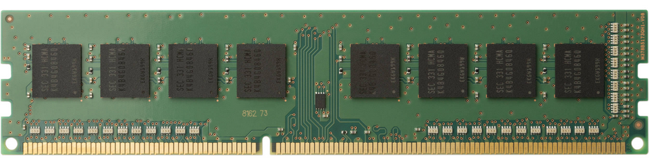
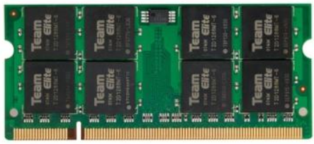

Het werkgeheugen is een plaats in de computer waar instructies en data tijdelijk worden opgeslagen. Typisch bevat het werkgeheugen enkel gegevens die op dat moment gebruikt worden.
Werkgeheugen bestaat uit een reeks cellen. Iedere cell bestaat uit een transistor en een condensator. Deze twee componenten kunnen één bit tijdelijk opslaan. Zoals je weet verliest de condensator zijn lading na verloop van tijd. Daarom moet er een mechanisme zijn wat de lading periodiek ververst. Dit wordt ook wel memory refresh genoemd. Wanneer de computer uitgezet wordt gaat de informatie in het werkgeheugen definitief verloren.
Om informatie uit het werkgeheugen te halen moet een adres worden opgegeven zodat de bijhorende data kan opgehaald worden.

In moderne x86 / x64 / ARM computer komt een adres overeen met 8 cellen ofwel 1 byte. Dit is belangrijk om te weten omdat dit de kleinste adresseerbare eenheid is.
De meeste instructies worden uitgevoerd op basis van words of woorden. Bijvoorbeeld ADD 0, 4.
Hierbij is ADD de opcode en zijn 0 en 4 operands. Operands zijn, zoals je weet, geheugenadressen en niet de waarden.
In een 32 bit processor is een woord 32 bits lang. Dit betekent dat instructies standaard worden uitgevoerd op 32 bit gegevens. Wanneer je de ADD instructie bekijkt dan worden de waarden bij elkaar opgeteld vanaf adres 0 tot en met adres 3 (32 bits) samen met de waarden vanaf adres 4 tot en met adres 7 (32 bits).
Een woord is dus de breedte waarmee de processor van nature werkt, en die volgt uit het type processor. In het hoofdstuk Informatievoorstelling staat een tweede betekenis van datzelfde woord: in assembler voor x86 bleef de naam WORD staan op de 16 bits van de 8086, en DWORD op 32 bits. Die namen zijn sindsdien niet meegegroeid. Waar hierna woord staat, bedoelen we de breedte van de processor.
Het resultaat wordt opnieuw opgeslagen in een woord. Het betekent ook dat een operand adres in principe maximaal 32 bits kan tellen !!! Dit zal later een heel belangrijk gegeven worden.
Het kleinste geheel getal dat zo kan opgeslagen worden is -2^31 of -2 miljard en het grootste geheel getal is dan 2^31 - 1 ofwel bijna +2 miljard. De eerste bit wordt gebruikt om het teken voor te stellen. In programmeertalen komt dit overeen met het datatype Integer.
Wil je een getal voorstellen dat groter is dan 2 miljard dan heb je uiteraard meer bits nodig. Vaak wordt gewerkt met een veelvoud van 32. Als je in je programma een variabele declareert met datatype Int64 of long dan worden 64 bits gebruikt. Er moet twee keer naar het werkgeheugen gelezen of geschreven worden.
In een 64 bit processor is een woord standaard 64 bits lang. Instructies worden nu uitgevoerd op standaard 64 bit gegevens. Wanneer je een ADD instructie uitvoert op twee Integers verandert er niet veel ten opzichte van een 32 bit computer. Maar wanneer je een ADD uitvoert op twee Int64 gegevens dan moet er slechts één keer naar het werkgeheugen gelezen of geschreven worden. Hier is een 64 bit processor dan dubbel zo snel. De aandachtige lezer zal opmerken dat de processor registers dan ook 64 bit breed zijn in plaats van 32 bit. Het maximum operand adres is nu ook 2^64 - 1 in plaats van 2^32 - 1.
Het maximum operand adres is bepalend voor het aantal bits dat opgeslagen kan worden in het werkgeheugen. Veronderstel een maximum operand adres van slechts 3 bits. De kleinste waarde van het adres is dan 0 en de grootste waarde is 7. Er zijn 8 mogelijke adressen. Achter elk adres zitten 8 cellen van elk 1 bit, dus dit betekent dat dit werkgeheugen 64 bits kan opslaan.
Hoe groter de waarde die het adres kan aannemen, hoe meer bits opgeslagen kunnen worden in het RAM geheugen.
In een moderne computer worden 64 bits processoren gebruikt wat betekent dat de limiet van 4 GiB werkgeheugen gelukkig al lang achter ons ligt. Het theoretische maximum is nu 16 EiB maar in een typische computer wordt vaak 16 GB tot 32 GB werkgeheugen aangetroffen.
Die twee grenzen staan er met opzet als GiB en EiB. Met 32 bits zijn er 2^32 adressen van elk een byte, en dat zijn precies 4 294 967 296 bytes ofwel 4 gibibyte; met 64 bits kom je op 16 exbibyte. Een geheugenfabrikant rekent zelf ook in machten van twee maar drukt GB op de module, net zoals Windows dat doet in het hoofdstuk Informatievoorstelling. Waar je hierna GB leest op een etiket of in een winkel, gaat het dus om gibibyte.
Een grote hoeveelheid werkgeheugen in een computer is echter niet altijd nuttig. In het begin van het hoofdstuk las je dat enkel gegevens die momenteel gebruikt worden opgeslagen zijn in het werkgeheugen. Gebruik je jouw computer enkel maar om aan tekstverwerking te doen en niet voor games, CAD/CAE, foto of videobewerking, ... dan is een grote hoeveelheid werkgeheugen vaak overbodig.
Om zeker te zijn hoeveel werkgeheugen je ongeveer nodig hebt kan je, bij normaal gebruik van je computer, taakbeheer openen en nagaan hoeveel werkgeheugen je typisch gebruikt. Merk je dat je op de limiet zit dan kan je eventueel nog het werkgeheugen uitbreiden.
In een desktop computer koop je dan een DIMM of Dual In-Line Memory Module van het type DDR4 of DDR5, afhankelijk van wat jouw systeem ondersteunt.

In een laptop zijn de afmetingen kleiner dus hier heb je een SO-DIMM of Small Outline Dual In-Line Memory Module nodig. Ook hier ga je moeten rekening houden met het type DDR geheugen dat je nodig hebt.
